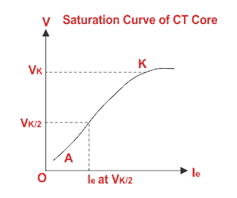
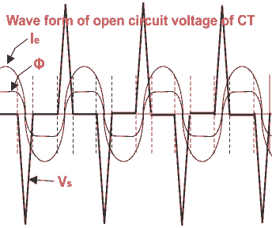

Knee Point Voltage of Current Transformer PS Class
Instrument Security Factor or ISF
Accuracy Limit Factor or ALF
Knee Point Voltage
Why CT Secondary should not be kept Open?
Current Transformer PS Class
Before understanding Knee Point Voltage of Current Transformer and current transformer PS class we should recall the terms instrument security factor of CT and accuracy limit factor.
Instrument Security Factor or ISF of Current Transformer
Instrument security factor is the ratio of instrument limit primary electric current to the rated primary current. Instrument limit electric current of a metering electric current transformer is the maximum value of primary electric current beyond which current transformer core becomes saturated. Instrument security factor of CT is the significant factor for choosing the metering instruments which to be connected to the secondary of the CT. Security or Safety of the measuring unit is better, if ISF is low. If we go through the example below it would be clear to us.
Suppose one current transformer has rating 100/1 A and ISF is 1.5 and another electric current transformer has same rating with ISF 2. That means, in first CT, the metering core would be saturated at 1.5 × 100 or 150 A, whereas is second CT, core will be saturated at 2 × 100 or 200 A. That means whatever may be the primary electric current of both CTs, secondary electric current will not increase further after 150 & 200 A of primary electric current of the CTs respectively. Hence maximum secondary electric current of the CTs would be 1.5 & 2.0 A.
As the maximum electric current can flow through the instrument connected to the first CT is 1.5 A which is less than the maximum value of electric current can flow through the instrument connected to the second CT i.e. 2 A. Hence security or safety of the instruments of first CT is better than later.
Another significance of ISF is during huge electrical fault, the short circuit current, flows through primary of the CT does not affect destructively, the measuring instrument attached to it as because, the secondary electric current of the CT will not rise above the value of rated secondary electric current multiplied by ISF.
Accuracy Limit Factor or ALF of Current Transformer
For protection electric current transformer, the ratio of accuracy limit primary electric current to the rated primary current. First we will explain, what is rated accuracy limit primary current?.
Broadly, this is the maximum value of primary current, beyond which core of the protection CT or simply protection core of of a CT starts saturated. The value of rated accuracy limit primary electric current is always many times more than the value of instrument limit primary current. Actually CT transforms the fault electric current of the electrical power system for operation of the protection relays connected to the secondary of that CT. If the core of the CT becomes saturated at lower value of primary current, as in the case of metering CT, the system fault will not reflect properly to the secondary, which may cause, the relays remain inoperative even the fault level of the system is large enough. That is why the core of the protection CT is made such a way that saturation level of that core must be high enough. But still there is a limit as because, it is impossible to make one magnetic core with infinitely high saturation level and secondly most important reason is that although the protection care should have high saturation level but that must be limited up to certain level otherwise total transformation of primary electric current during huge fault may badly damage the protection relays. So it is clear from above explanation, rated accuracy limit primary current, should not be so less, that it will not at all help the relays to be operated on the other hand this value must not be so high that it can damage the relays.
So, accuracy limit factor or ALF should not have the value nearer to unit and at the same time it should not be as high as 100. The standard values of ALF as per IS-2705 are 5, 10, 15, 20 & 30.
Knee Point Voltage of Current Transformer
This is the significance of saturation level of a CT core mainly used for protection purposes. The sinusoidal voltage of rated frequency applied to the secondary terminals of electric current transformer, with other winding being open circuited, which when increased by 10% cause the exiting electric current to increase 50%. The CT core is made of CRGO steel. It has its won saturation level.
The EMF induced in the CT secondary windings is
Where, f is the system frequency, φ is the maximum magnetic flux in Wb. T2 is the number of turns of the secondary winding. The flux in the core, is produced by excitation electric current Ie. We have a non-liner relationship between excitation electric current and magnetizing flux. After certain value of excitation current, flux will not further increase so rapidly with increase in excitation current. This non-liner relation curve is also called B - H curve. Again from the equation above, it is found that, secondary voltage of a electric current transformer is directly proportional to flux φ. Hence one typical curve can be drawn from this relation between secondary voltage and excitation electric current as shown below.
It is clear from the curve that, linear relation between V & Ie is maintained from point A & K. The point ′A′ is known as ′ankle point′ and point ′K′ is known as ′Knee Point′.
voltage of electric current transformer" title="Knee Point Voltage of Current Transformer" class="alignright"/>
In differential and restricted earth fault (REF) protection scheme, accuracy class and ALF of the CT may not ensure the reliability of the operation. It is desired that, differential and REF relays should not be operated when fault occurs outside the protected transformer. When any fault occurs outside the differential protection zone, the faulty electric current flows through the CTs of both sides of electrical power transformer. The both LV & HV CTs have magnetizing characteristics. Beyond the knee point, for slight increase in secondary emf a large increasing in excitation electric current is required. So after this knee point excitation electric current of both electric current transformers will be extremely high, which may cause mismatch between secondary electric current of LV & HV electric current transformers. This phenomena may cause unexpected tripping of power transformer. So the magnetizing characteristics of both LV & HV sides CTs, should be same that means they have same knee point voltage Vk as well as same excitation electric current Ie at Vk/2. It can be again said that, if both knee point voltage of electric current transformer and magnetizing characteristic of CTs of both sides of power transformer differ, there must be a mismatch in high excitation currents of the CTs during fault which ultimately causes the unbalancing between secondary electric current of both groups of CTs and transformer trips.
So for choosing CT for differential protection of transformer, one should consider current transformer PS class rather its convectional protection class. PS stands for protection special which is defined by knee point voltage of electric current transformer Vk and excitation electric current Ie at Vk/2.
Why CT Secondary Should Not Be Kept Open?
The electrical power system load current always flows through electric current transformer primary; irrespective of whether the electric current transformer is open circuited or connected to burden at its secondary.

If CT secondary is open circuited, all the primary electric current will behave as excitation current, which ultimately produce huge voltage. Every electric current transformer has its won non-linear magnetizing curve, because of which secondary open circuit voltage should be limited by saturation of the core. If one can measure the rms voltage across the secondary terminals, he or she will get the value which may not appear to be dangerous. As the CT primary electric current is sinusoidal in nature, it zero 100 times per second.(As frequency of the electric current is 50 Hz). The rate of change of flux at every electric current zero is not limited by saturation and is high indeed. This develops extremely high peaks or pulses of voltage. This high peaks of voltage may not be measured by conventional voltmeter. But these high peaks of induced voltage may breakdown the CT insulation, and may case accident to personnel. The actual open-circuit voltage peak is difficult to measure accurately because of its very short peaks. That is why CT secondary should not be kept open.
 by
by